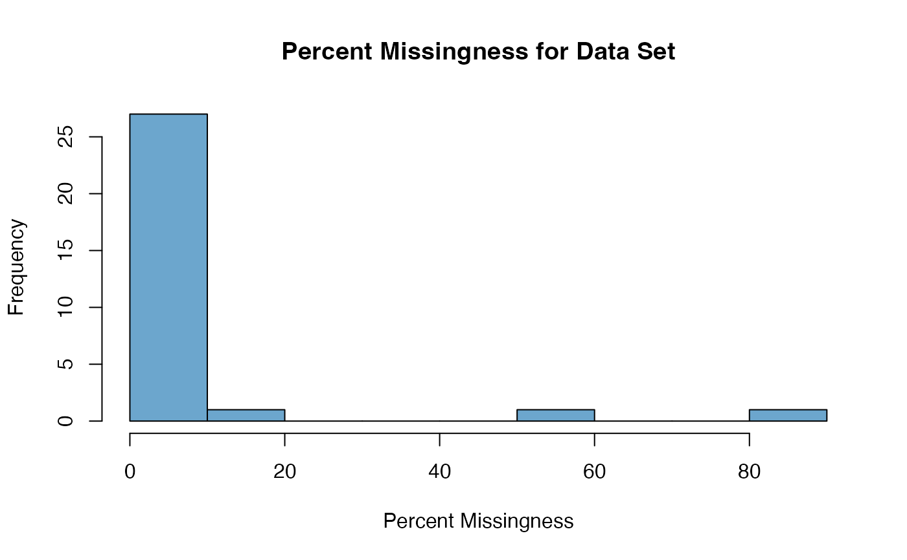

This awareness function summarizes the amount of missingness in the data set.
Arguments
- DS.data
Data set.
- non.NA.missing.codes
A user-defined vector of numerical missing value codes (e.g., -9999).
- threshold
Threshold for missingness of concern (as a percent).
Value
Tibble containing: (1) Message containing information on the number of variables with a % missingness greater than the threshold; (2) Missingness by variable summary; and (3) Summary of missingness for variables with a missingness level greater than the threshold.
Examples
# Correct useage
data(ExampleA)
missingness_summary(DS.data.A, non.NA.missing.codes=c(-4444, -9999))

#> $Message
#> [1] "There are 0 variables with a percent missingness > 95% in your data set."
#>
#> $threshold_summary
#> [1] missing percent_missingness
#> <0 rows> (or 0-length row.names)
#>
#> $full_missingness_summary
#> missing percent_missingness
#> LENGTH_SMOKING_YEARS 84 84
#> PREGNANT 53 53
#> SAMPLE_ID 16 16
#> SMOKING_HX 5 5
#> PHYSICAL_ACTIVITY 4 4
#> WEIGHT 3 3
#> BMI 3 3
#> OBESITY 3 3
#> ABD_CIRC 3 3
#> HIP_CIRC 3 3
#> ABD_SKF 3 3
#> SUP_SKF 3 3
#> RESIST 3 3
#> REACT 3 3
#> HX_DM 3 3
#> HX_STROKE 3 3
#> HEIGHT 2 2
#> CUFFSIZE 2 2
#> BP_SYSTOLIC 2 2
#> BP_DIASTOLIC 2 2
#> HTN 2 2
#> HX_ANXIETY 2 2
#> HX_DEPRESSION 2 2
#> SUBJECT_ID 0 0
#> AGE 0 0
#> SEX 0 0
#> HEART_RATE 0 0
#> SOCIAL_SUPPORT 0 0
#> PERCEIVED_CONFLICT 0 0
#> PERCEIVED_HEALTH 0 0
#>